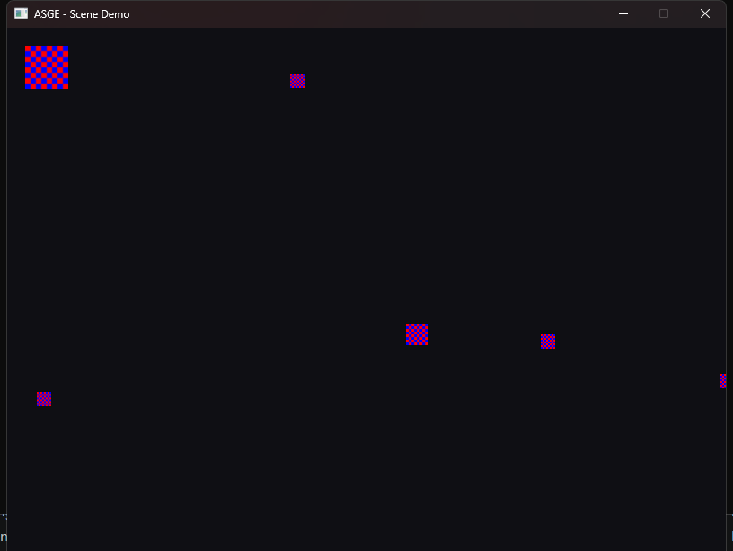

← All examples
Scenes · ECS · Assets
Scene Management
A whole level loaded from TOML
Loads its whole entity set from a hand-authored TOML scene file (assets/scene.toml) via SceneManager::LoadScene instead of spawning entities in code — see ecs_demo for the code-driven equivalent this replaces.
Ties together every ASGE subsystem at its current state: the virtual filesystem loads the TOML, the asset pipeline resolves textures, the ECS registry holds the resulting entities, and SceneManager can swap the whole active scene at runtime or snapshot it back out to disk.
Controls
- W A S D Move the player entity
- P Save a snapshot of the current scene back to TOML (edge-triggered)
- L Swap to the other scene file, alternating back and forth

Run it yourself
build just this example
cmake --build --preset windows-debug --target scene_demo
# binary lands under bin/ (e.g. bin/Debug/scene_demo.exe on Windows)See Installation for the full build setup.
Source
examples/scene_demo/Game.hpp
#pragma once
#include <ASGE/ASGE.hpp>
#include <memory>
#include <string>
#include <unordered_map>
/**
* @brief Loads its whole entity set from a hand-authored TOML scene file
* (assets/scene.toml) via SceneManager::LoadScene instead of spawning
* entities in code — see ecs_demo for the code-driven equivalent this
* replaces.
*
* Ties together every ASGE subsystem at its current state: VirtualFileSystem
* + AssetManager resolve the scene file and each Sprite's texture by virtual
* path; Registry/View run the ECS side; InputState is polled in Update()
* (see input_demo) to drive the player entity (the scene's last one, by
* convention — see scene.toml's own comments). P calls SceneManager::SaveScene
* on the live, moved-around Registry — the other half of the round-trip —
* and L requests a swap to a second scene file (assets/scene_alt.toml) via
* SceneManager::RequestLoad, applied once per frame from a point nothing is
* iterating the Registry, demonstrating on-the-fly scene swapping.
* OnSystemEvent is left empty, same as input_demo, since polling covers
* everything this demo needs.
*
* Notably absent: asge::game::systems::MovementSystem/RenderSystem. Both
* take a bare Registry and have no notion of "active scene" — SceneManager
* now keeps every resident scene's entities in the *same* Registry (see its
* own doc comment), so calling those systems against GetRegistry() directly
* would move/draw every resident scene at once, not just the active one.
* MoveActiveEntities()/RenderActiveEntities() below are small local
* stand-ins scoped to SceneManager::ActiveEntities() instead — teaching the
* shared systems to be scene-aware for real is future work, not this demo's.
*/
class SceneDemoState final : public asge::game::state::IGameState<int>
{
asge::game::scene::SceneManager& m_SceneManager;
asge::game::asset::AssetManager& m_Assets;
asge::ecs::Entity m_Player{ asge::ecs::Entity::Null() };
// Textures are cached by the virtual path each Sprite names, so several
// entities sharing one texture only create it once -- and so a scene
// swap's freshly-loaded sprites still resolve against the same cache
// instead of recreating a texture already loaded once.
std::unordered_map<std::string, std::unique_ptr<asge::video::ITexture>> m_Textures;
void ResolveSpriteTextures( asge::video::IRenderer& inRenderer );
void UpdatePlayerVelocity( asge::input::InputState const& inInput );
void MoveActiveEntities( float inDeltaTime ); // MovementSystem, scoped to ActiveEntities()
void RenderActiveEntities( asge::video::IRenderer& inRenderer ); // RenderSystem, likewise
void WrapAroundScreen();
void SaveSceneSnapshot() const;
void RefreshPlayerReference(); // re-finds "the player" after any (re)load
public:
SceneDemoState(
asge::game::scene::SceneManager& inSceneManager, asge::game::asset::AssetManager& inAssets );
[[nodiscard]] std::optional<asge::game::state::Transition<int>>
Update(float inDeltaTime, asge::input::InputState const& inInput) override;
void Render(asge::video::IRenderer& inRenderer) override;
void OnSystemEvent(asge::event::SystemEvent const& inSysEvent) override;
};
class SceneDemoGame final : public asge::game::Game<int>
{
public:
explicit SceneDemoGame(asge::video::IRenderer& inRenderer, asge::audio::AudioDevice& inAudioDev);
protected:
[[nodiscard]] std::unique_ptr<StateType> CreateState(int inId) override;
};
examples/scene_demo/Game.cpp
#include "Game.hpp"
#include <algorithm>
#include <filesystem>
namespace
{
using asge::game::components::Sprite;
using asge::game::components::Transform;
using asge::game::components::Velocity;
constexpr float kWindowWidth = 800.0f;
constexpr float kWindowHeight = 600.0f;
constexpr float kPlayerSpeed = 220.0f;
}
SceneDemoState::SceneDemoState(
asge::game::scene::SceneManager& inSceneManager, asge::game::asset::AssetManager& inAssets)
: m_SceneManager(inSceneManager), m_Assets(inAssets)
{
RefreshPlayerReference();
}
void SceneDemoState::RefreshPlayerReference()
{
// The active scene's last entity is the player, by convention -- see
// scene.toml's own comments for why (no entity name/tag/id concept
// exists yet to do this properly). ActiveEntities(), not GetRegistry()
// -- the shared Registry also holds any other resident-but-inactive
// scene's entities, whose "last one" isn't this scene's player at all.
// Re-run after every (re)load, since a fresh load hands out entirely
// new Entity handles (a residency hit reuses the same ones, but
// there's no harm re-deriving m_Player from them either way).
auto active = m_SceneManager.ActiveEntities();
m_Player = active.empty() ? asge::ecs::Entity::Null() : active.back();
}
void SceneDemoState::ResolveSpriteTextures(asge::video::IRenderer &inRenderer)
{
for ( auto entity : m_SceneManager.ActiveEntities() )
{
auto& registry = m_SceneManager.GetRegistry();
auto spriteResult = registry.GetComponent<Sprite>(entity);
if ( !spriteResult ) continue;
Sprite& s = spriteResult.Value().get();
if ( s.m_Texture || s.m_VirtualPath.empty() ) continue;
// Cached by virtual path so entities sharing one texture (every
// sprite in this demo, all pointing at assets/checker.bmp) only
// pay for CreateTexture once -- including across a scene swap,
// whose freshly-loaded sprites arrive with m_Texture null again
// but hit this same cache instead of recreating it.
auto cached = m_Textures.find(s.m_VirtualPath);
if ( cached == m_Textures.end() )
{
auto imageAsset = m_Assets.GetImage(s.m_VirtualPath);
if ( !imageAsset )
{
imageAsset.LogError();
continue;
}
auto texture = inRenderer.CreateTexture(imageAsset.Value()->Get());
if ( !texture ) continue;
cached = m_Textures.emplace(s.m_VirtualPath, std::move(texture)).first;
}
s.m_Texture = cached->second.get();
}
}
void SceneDemoState::MoveActiveEntities(float inDeltaTime)
{
// Same logic as asge::game::systems::MovementSystem, just scoped to
// ActiveEntities() instead of View<Transform, Velocity>() over the
// whole (multi-scene) Registry -- see this class's doc comment.
auto& registry = m_SceneManager.GetRegistry();
for ( auto entity : m_SceneManager.ActiveEntities() )
{
auto transform = registry.GetComponent<Transform>(entity);
auto velocity = registry.GetComponent<Velocity>(entity);
if ( !transform || !velocity ) continue;
transform.Value().get().m_X += velocity.Value().get().m_DX * inDeltaTime;
transform.Value().get().m_Y += velocity.Value().get().m_DY * inDeltaTime;
}
}
void SceneDemoState::RenderActiveEntities(asge::video::IRenderer &inRenderer)
{
// Same logic as asge::game::systems::RenderSystem, scoped the same way
// MoveActiveEntities() is -- see this class's doc comment.
auto& registry = m_SceneManager.GetRegistry();
for ( auto entity : m_SceneManager.ActiveEntities() )
{
auto transformResult = registry.GetComponent<Transform>(entity);
auto spriteResult = registry.GetComponent<Sprite>(entity);
if ( !transformResult || !spriteResult ) continue;
asge::video::ITexture* texture = spriteResult.Value().get().m_Texture;
if ( !texture ) continue;
auto const& t = transformResult.Value().get();
auto const& src = spriteResult.Value().get().m_SourceRect;
float srcW{};
float srcH{};
if ( src.has_value() )
{
srcW = src->m_Width;
srcH = src->m_Height;
}
else
{
asge::math::Int2 const texSize = texture->Size();
srcW = static_cast<float>(texSize.x());
srcH = static_cast<float>(texSize.y());
}
asge::math::Rect const destRect{
t.m_X, t.m_Y,
srcW * t.m_ScaleX,
srcH * t.m_ScaleY
};
if ( src.has_value() ) inRenderer.DrawTexture( *texture, *src, destRect );
else inRenderer.DrawTexture( *texture, destRect );
}
}
void SceneDemoState::WrapAroundScreen()
{
// Demo-specific dressing (not part of the shared Game/Systems library):
// keeps drifting entities on screen by teleporting them across once
// they fully exit one edge. Same approach as ecs_demo, scoped to
// ActiveEntities() for the same reason MoveActiveEntities() is.
auto& registry = m_SceneManager.GetRegistry();
for ( auto entity : m_SceneManager.ActiveEntities() )
{
auto transform = registry.GetComponent<Transform>(entity);
if ( !transform ) continue;
auto& t = transform.Value().get();
float const margin = 64.0f * std::max(t.m_ScaleX, t.m_ScaleY);
if ( t.m_X < -margin ) t.m_X = kWindowWidth + margin;
else if ( t.m_X > kWindowWidth + margin ) t.m_X = -margin;
if ( t.m_Y < -margin ) t.m_Y = kWindowHeight + margin;
else if ( t.m_Y > kWindowHeight + margin ) t.m_Y = -margin;
}
}
void SceneDemoState::UpdatePlayerVelocity(asge::input::InputState const& inInput)
{
if ( m_Player == asge::ecs::Entity::Null() ) return;
auto result = m_SceneManager.GetRegistry().GetComponent<Velocity>(m_Player);
if ( !result ) return;
// Continuous, held-down movement -- IsKeyDown polling, same as
// input_demo's UpdatePlayerBox, instead of hand-tracking bools from
// OnSystemEvent's press/release events.
Velocity& velocity = result.Value().get();
velocity.m_DX = (inInput.IsKeyDown(asge::input::Keycode::D) ? kPlayerSpeed : 0.0f)
- (inInput.IsKeyDown(asge::input::Keycode::A) ? kPlayerSpeed : 0.0f);
velocity.m_DY = (inInput.IsKeyDown(asge::input::Keycode::S) ? kPlayerSpeed : 0.0f)
- (inInput.IsKeyDown(asge::input::Keycode::W) ? kPlayerSpeed : 0.0f);
}
void SceneDemoState::SaveSceneSnapshot() const
{
// Written next to the temp dir, not back over the checked-in
// assets/scene*.toml -- this demo's point is that the *live*, moved
// around Registry round-trips, not that it should overwrite its own
// source asset every time someone presses P. SaveScene() only writes
// the active scene's entities, not any other resident-but-inactive one.
auto const path = std::filesystem::temp_directory_path() / "asge_scene_demo_saved.toml";
auto result = m_SceneManager.SaveScene(path);
if ( !result ) { result.LogError(); return; }
LOG_INFO("Scene snapshot saved to ", path.string());
}
std::optional<asge::game::state::Transition<int>>
SceneDemoState::Update(float inDeltaTime, asge::input::InputState const& inInput)
{
UpdatePlayerVelocity(inInput);
MoveActiveEntities(inDeltaTime);
WrapAroundScreen();
// Edge-triggered -- IsKeyPressed, not IsKeyDown, so one tap saves once
// instead of once per frame the key happens to be held.
if ( inInput.IsKeyPressed(asge::input::Keycode::P) ) SaveSceneSnapshot();
// L requests a swap to the second scene file, alternating back and
// forth on repeated presses. RequestLoad() only *queues* it -- the
// swap itself happens below, via ApplyPendingTransition(), now that
// MoveActiveEntities()/WrapAroundScreen are done iterating this
// frame's active entities. Doing the swap immediately from inside this
// Update() would risk mutating the very entity list those two just
// iterated.
if ( inInput.IsKeyPressed(asge::input::Keycode::L) )
{
auto const& currentPath = m_SceneManager.CurrentScenePath();
bool const onAlt = currentPath.has_value() && *currentPath == "assets/scene_alt.toml";
m_SceneManager.RequestLoad( onAlt ? "assets/scene.toml" : "assets/scene_alt.toml" );
}
if ( m_SceneManager.HasPendingTransition() )
{
auto result = m_SceneManager.ApplyPendingTransition();
if ( !result ) { result.LogError(); return std::nullopt; }
RefreshPlayerReference(); // the new active scene's "last entity" is a different one
}
return std::nullopt;
}
void SceneDemoState::Render(asge::video::IRenderer &inRenderer)
{
inRenderer.Clear({ 15, 15, 20, 255 });
ResolveSpriteTextures(inRenderer); // cheap no-op for sprites that already have a texture
RenderActiveEntities(inRenderer);
}
void SceneDemoState::OnSystemEvent([[maybe_unused]] asge::event::SystemEvent const &inSysEvent)
{
// Deliberately empty -- every reaction to input in this example comes
// from polling InputState in Update() instead (see input_demo).
}
SceneDemoGame::SceneDemoGame(asge::video::IRenderer& inRenderer, asge::audio::AudioDevice& inAudioDev)
: Game(inRenderer, inAudioDev)
{
// ASGE_SCENE_DEMO_ASSET_DIR is injected by CMakeLists.txt -- mounted
// once so both scene files and every Sprite's texture inside them are
// resolved by virtual path, not a hardcoded OS path baked into this demo.
auto mountResult = m_Vfs.Mount("assets", ASGE_SCENE_DEMO_ASSET_DIR);
if ( !mountResult ) mountResult.LogError();
// m_SceneManager.LoadScene() directly, not the Game::LoadScene()
// convenience wrapper -- that wrapper also runs AssetManager::
// ResolveAssets, which would resolve sprites through a texture cache
// separate from this demo's own m_Textures (see SceneDemoState), and a
// later scene swap (see Update()'s L-key handling) goes through
// m_SceneManager directly too, so every load stays on one resolution
// path instead of two.
auto loadResult = m_SceneManager.LoadScene("assets/scene.toml");
if ( !loadResult ) loadResult.LogError();
SetInitialState(0);
}
std::unique_ptr<SceneDemoGame::StateType> SceneDemoGame::CreateState([[maybe_unused]] int inId)
{
return std::make_unique<SceneDemoState>( m_SceneManager, m_Assets );
}